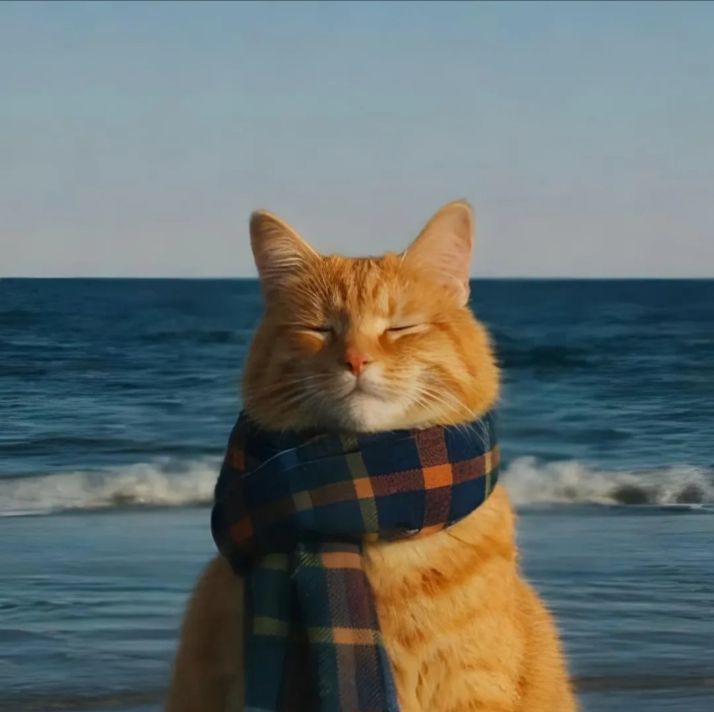

ABOUT ME
حبابك ألف.
أنا محمد أحمد، معروف بـ(باشاب)، مصمم جرافيك بحب أحوّل الأفكار العادية لحاجة ملفتة ومختلفة.
شغال في تصميم البوسترات، الفيديوهات، والمواقع الإلكترونية، وبشتغل مع مؤسسات، جمعيات، وأفراد، وبحاول دائمًا أطلع كل مشروع بصورة تليق بفكرته وصاحبه.
بالنسبة لي التصميم ما مجرد ألوان وصور؛ التصميم هو طريقة نحكي بيها الفكرة ونخليها توصل بالشكل الصح.
لو عندك فكرة، مشروع، أو حتى حاجة لسه في بدايتها، خلينا نصممها سوا ونطلعها بصورة مختلفة.